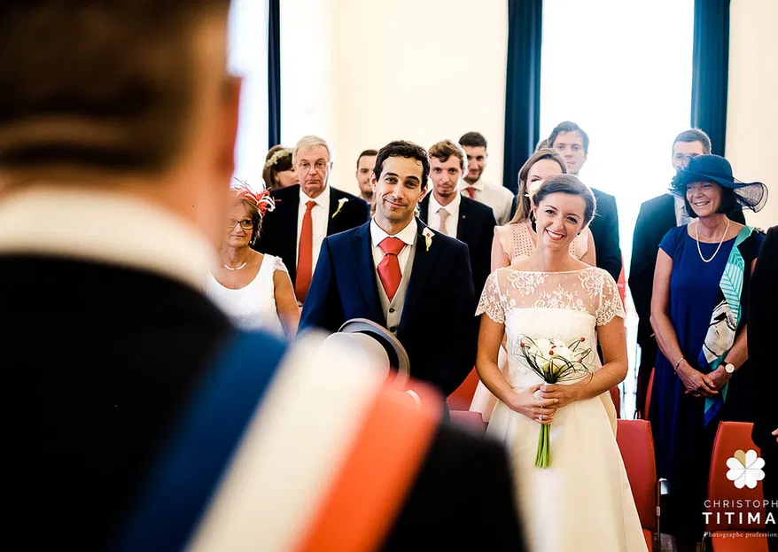

Dossier, documents, justificatifs ... N'oubliez pas toutes les démarches et formalités avant le mariage. Suivez donc nos étapes pour constituer votre dossier de mariage civil !
 Initier une procédures de mariageLe mariage civil à la mairie implique la publication des bans. Cette publication est obligatoire depuis Charlemagne et avait pour but d’empêcher les filiations douteuses, la consanguinité et l’inceste. Le mariage religieux aujourd’hui ne peut se faire sans avoir célébré le mariage civil, or à l’époque seul le mariage religieux était valable. De nos jours le mariage civil est le seul reconnu devant la loi. Pour pouvoir se marier religieusement, il est obligatoire de s’être marié à la mairie avant. Il faut donc faire une demande de publication des bans à la mairie ou sera célébré le mariage civil environ vingt à trente jours avant la célébration de la cérémonie. Sachez que pour que le mariage civil puisse avoir lieu il faut attendre la fin de la publication des bans qui reste affichée dix jours environ.
Initier une procédures de mariageQue vous souhaitiez vous marier religieusement ou non, il faut avant tout vous marier civilement. Alors voici les documents nécessaires à votre mariage :